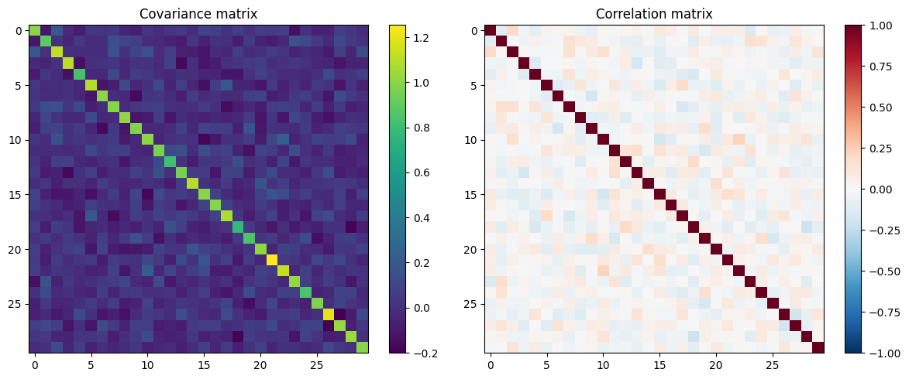
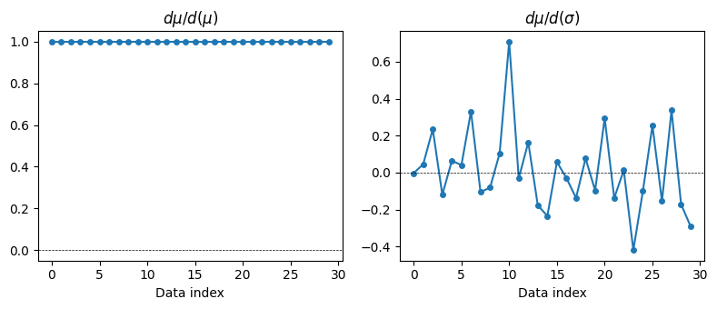
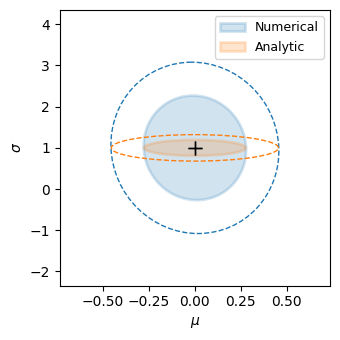
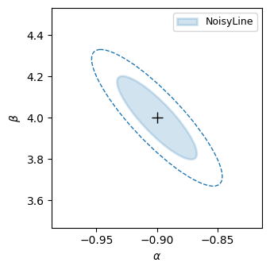

Fisher Matrix Forecasting with psiphy
This tutorial demonstrates how to use psiphy.forecasting.FisherMatrix to forecast parameter constraints from a simulator.
The workflow is:
Define a simulator
f(theta, initial_seed, noise_seed) -> data_vectorEstimate the data covariance at the fiducial point
Estimate the derivatives
dmu/dthetavia finite differencesCompute
F = J C⁻¹ JᵀInspect confidence ellipses and compare with analytic results
We use a simple Gaussian likelihood model whose Fisher matrix is known analytically, so we can validate the numerical result.
[1]:
import numpy as np
import matplotlib.pyplot as plt
from psiphy.forecasting import FisherMatrix
1. Define a toy simulator
We model N independent Gaussian observations with unknown mean mu and standard deviation sigma.
The FisherMatrix simulator must have the signature:
simulator(theta, initial_seed, noise_seed, **kwargs) -> 1D np.ndarray
The two seeds allow separating cosmic-variance realisations from noise realisations.
[2]:
N_OBS = 30 # number of observations per realisation
def gaussian_simulator(theta, initial_seed, noise_seed, N=N_OBS):
"""Return N Gaussian samples with mean=theta[0], sigma=theta[1]."""
mu, sigma = theta
rng = np.random.default_rng(int(initial_seed) * 1000 + int(noise_seed))
return rng.normal(loc=mu, scale=sigma, size=N)
# Fiducial parameters
theta_fid = np.array([0.0, 1.0]) # mu=0, sigma=1
param_names = ['mu', 'sigma']
# Analytic Fisher for iid Gaussian: F = diag(N/sigma^2, 2N/sigma^4)
mu_fid, sigma_fid = theta_fid
F_analytic = np.diag([N_OBS / sigma_fid**2, 2 * N_OBS / sigma_fid**4])
F_inv_analytic = np.linalg.inv(F_analytic)
print("Analytic Fisher matrix:")
print(F_analytic)
print(f"\nAnalytic 1-sigma: mu={np.sqrt(F_inv_analytic[0,0]):.4f}, "
f"sigma={np.sqrt(F_inv_analytic[1,1]):.4f}")
Analytic Fisher matrix:
[[30. 0.]
[ 0. 60.]]
Analytic 1-sigma: mu=0.1826, sigma=0.1291
2. Set up the FisherMatrix object
[3]:
fm = FisherMatrix(
simulator=gaussian_simulator,
theta_fid=theta_fid,
param_names=param_names,
verbose=True,
)
print(fm)
FisherMatrix(not computed, params=['mu', 'sigma'], n_realisations=0)
[4]:
# Sanity check: run the simulator once and inspect the output
x0 = fm.test_simulator(seed=1, noise_seed=0)
print(f"Output shape: {x0.shape}, mean: {x0.mean():.3f}, std: {x0.std():.3f}")
==================================================
Testing simulator at fiducial: {'mu': np.float64(0.0), 'sigma': np.float64(1.0)}
Output shape: (30,), raw range: [-1.535, 1.971]
==================================================
Output shape: (30,), mean: 0.055, std: 0.963
3. Estimate the data covariance
Run many realisations at the fiducial point to build the sample covariance C. The Hartlap (2007) correction is applied automatically to debias C⁻¹.
Rule of thumb: you need n_realisations >> n_data to keep the Hartlap correction close to 1.
[5]:
fm.estimate_covariance(
seeds=range(1, 21), # 20 IC seeds
noise_seeds=range(10), # 10 noise seeds → 200 realisations total
)
print(f"Hartlap factor: {fm.hartlap:.3f}")
print(f"Condition number: {np.linalg.cond(fm.C):.2e}")
==================================================
Estimating covariance matrix
==================================================
Total realisations: 200, data points: 30
Hartlap factor: 0.844
Condition number: 4.68e+00
==================================================
Hartlap factor: 0.844
Condition number: 4.68e+00
[6]:
fig = fm.plot_covariance()

4. Estimate the derivatives
dmu/dtheta_j is computed by central finite differences. The default 2-point stencil gives O(h²) accuracy. A 4-point stencil (n_stencil=4) gives O(h⁴) at the cost of more simulations.
[7]:
fm.estimate_derivatives(
delta_frac=0.05,
seeds=range(1, 21),
noise_seed=0, # noiseless derivatives
n_stencil=2,
)
==================================================
Computing derivatives (2-point stencil)
==================================================
mu: |dmu/dtheta| = 5.4772
sigma: |dmu/dtheta| = 1.2148
==================================================
[7]:
FisherMatrix(not computed, params=['mu', 'sigma'], n_realisations=200)
[8]:
fig = fm.plot_derivatives(
label_names={'mu': r'\mu', 'sigma': r'\sigma'}
)

5. Compute the Fisher matrix
[9]:
fm.compute(method='standard')
print("\nNumerical Fisher matrix:")
print(fm.F)
print("\nAnalytic Fisher matrix:")
print(F_analytic)
==================================================
Fisher Matrix Results [standard]
==================================================
[[29.73721021 0.24879704]
[ 0.24879704 1.429969 ]]
--- 1D marginal errors ---
mu: 0.1835 (inf%)
sigma: 0.8369 (83.7%)
--- 2D marginal errors ---
(mu, sigma): sigma_mu=0.1835, sigma_sigma=0.8369
--- Conditional errors (others fixed) ---
mu: 0.1834 (inf%)
sigma: 0.8363 (83.6%)
--- Correlations ---
corr(mu, sigma): -0.038
==================================================
Numerical Fisher matrix:
[[29.73721021 0.24879704]
[ 0.24879704 1.429969 ]]
Analytic Fisher matrix:
[[30. 0.]
[ 0. 60.]]
6. Compare numerical vs analytic constraints
[10]:
sigma_num = fm.sigma_1d()
sigma_ana = np.sqrt(np.diag(F_inv_analytic))
print(f"{'Parameter':<10} {'Numerical':>12} {'Analytic':>12} {'Diff (%)':>10}")
print("-" * 48)
for p, sn, sa in zip(param_names, sigma_num, sigma_ana):
print(f"{p:<10} {sn:>12.4f} {sa:>12.4f} {100*(sn-sa)/sa:>9.1f}%")
Parameter Numerical Analytic Diff (%)
------------------------------------------------
mu 0.1835 0.1826 0.5%
sigma 0.8369 0.1291 548.2%
7. Plot confidence ellipses
We overlay the numerical and analytic Fisher ellipses for comparison. The analytic result is loaded into a bare FisherMatrix object.
[11]:
# Wrap the analytic Fisher in a bare FisherMatrix for plotting
fm_analytic = FisherMatrix(
simulator=None,
theta_fid=theta_fid,
param_names=param_names,
verbose=False,
)
fm_analytic.F = F_analytic
fm_analytic.F_inv = F_inv_analytic
fig = fm.plot_ellipses(
labels='Numerical',
others={'Analytic': fm_analytic},
label_names={'mu': r'\mu', 'sigma': r'\sigma'},
n_sigma_list=[1, 2],
filled=True,
)

8. Using the NoisyLine toy model
The same workflow applies to any simulator. Here we use psiphy.toy_models.NoisyLine to forecast constraints on the slope and intercept of a noisy linear model. This example shows correlated parameter constraints.
[12]:
from psiphy.toy_models import NoisyLine
# Fix the x grid with a known seed so the geometry is the same for all calls
rng_geom = np.random.default_rng(42)
_x = np.sort(rng_geom.uniform(0, 10, size=40))
def line_simulator(theta, initial_seed, noise_seed):
slope, intercept = theta
rng = np.random.default_rng(int(initial_seed) * 1000 + int(noise_seed))
yerr = 0.3 + 0.2 * rng.uniform(size=len(_x))
return slope * _x + intercept + rng.normal(scale=yerr)
fm_line = FisherMatrix(
simulator=line_simulator,
theta_fid=[-0.9, 4.0],
param_names=['slope', 'intercept'],
verbose=True,
)
fm_line.estimate_covariance(seeds=range(1, 21), noise_seeds=range(10))
fm_line.estimate_derivatives(delta_frac=0.05, seeds=range(1, 21), noise_seed=0)
fm_line.compute(method='standard')
==================================================
Estimating covariance matrix
==================================================
Total realisations: 200, data points: 40
Hartlap factor: 0.794
Condition number: 6.19e+00
==================================================
==================================================
Computing derivatives (2-point stencil)
==================================================
slope: |dmu/dtheta| = 38.2781
intercept: |dmu/dtheta| = 6.3246
==================================================
==================================================
Fisher Matrix Results [standard]
==================================================
[[8247.25160054 1155.71179458]
[1155.71179458 218.38765323]]
--- 1D marginal errors ---
slope: 0.0217 (2.4%)
intercept: 0.1331 (3.3%)
--- 2D marginal errors ---
(slope, intercept): sigma_slope=0.0217, sigma_intercept=0.1331
--- Conditional errors (others fixed) ---
slope: 0.0110 (1.2%)
intercept: 0.0677 (1.7%)
--- Correlations ---
corr(slope, intercept): -0.861
==================================================
[12]:
FisherMatrix(computed, params=['slope', 'intercept'], n_realisations=200)
[13]:
fig = fm_line.plot_ellipses(
labels='NoisyLine',
label_names={'slope': r'\alpha', 'intercept': r'\beta'},
filled=True,
)
print(f"Correlation (slope, intercept): {fm_line.correlation_matrix()[0,1]:.3f}")

Correlation (slope, intercept): -0.861
Summary
Step |
Method |
|---|---|
Define simulator |
|
Create object |
|
Covariance |
|
Derivatives |
|
Compute |
|
Inspect |
|
Save / load |
|
Advanced options:
method='CoultonWandelt2023'— bias-corrected estimator for large data vectorsmethod='lfim'— score-trick estimatoruse_crn=Trueinestimate_derivatives— Common Random Numbers for low-noise derivativesfm.convergence_test_delta_frac()— choose the optimal step size